Disentangling Superpositions: Interpretable Brain Encoding Model with Sparse Concept Atoms
{kind=link}
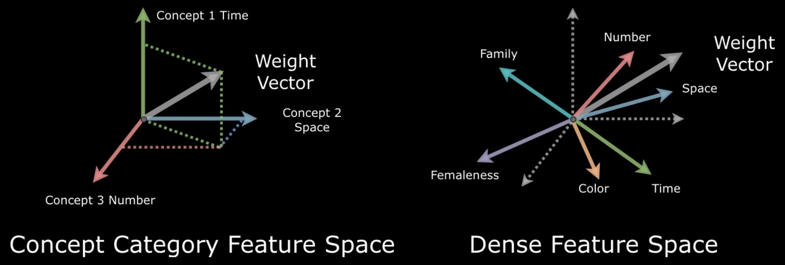
Mapping ANN-derived representations onto brain activity often amounts to explaining one black box with another.
Written from the talk I gave on this work, and the figures are its slides. The full argument is on OpenReview; the recorded talk is five minutes long.
The short version
We use interpretable AI models to understand how the brain represents abstract ideas. Encoding models predict brain activity from word embeddings, and they predict well. But an embedding compresses many thousands of concepts into a few hundred dimensions, so concepts share directions, and the fitted weights cannot say which concept a voxel is actually tuned to. We unpack the embedding into 1,000 sparse concept atoms, one concept per axis, and refit. Prediction is unchanged; the weights become legible. The first thing they show is that time, space and number occupy the same regions of cortex.
- 300 → 1,000GloVe dimensions unpacked into concept atoms
- 0.0005change in R2 from switching to sparse features (not significant)
- 0.26 vs 0.09agreement of concept maps across people, sparse vs dense
- IPS + IFGwhere time, space and number all overlap, in both hemispheres
Where this comes from
Artificial intelligence began as an imitation of the brain. In the 1940s Donald Hebb proposed that neurons which fire together wire together. That was the first biological learning rule, and it became the ancestor of the earliest artificial neural networks.
In the 1960s Hubel and Wiesel found neurons in a cat’s visual cortex that respond to particular edge orientations, behaving like small feature detectors. That observation became the convolutional network, which still powers most computer vision.
The loop is now closing in the other direction. Neuroscientists increasingly use the models to study the brain, and this work sits on that return path: it takes a representation learned by a language model and asks what it can honestly tell us about cortex.
What an encoding model does
Functional MRI measures tiny changes in blood oxygenation across the brain. To visualize data that complex, you computationally inflate the cerebral cortex and flatten it into a two-dimensional map; your own cortex, flattened, would be about the size of a large pizza. Visual areas land near the middle of that map and frontal cortex toward the edge.
Seven people lay in a scanner and listened to true stories told on stage for The Moth Radio Hour: eleven stories each, a little over two hours in all (Huth et al., 2016). Ten are used for training; the eleventh, heard twice, is held out for testing. Every second or so the scanner records signals from tens of thousands of small brain volumes, called voxels. Anything you perceive in the story, whether a sound, a word, or a fleeting emotion or memory, should leave a trace somewhere in those activity patterns.
The purpose of an encoding model is to learn a mapping between what is happening in the stimulus and how the brain responds. Every word of the story is turned into a vector of features X; the measured responses are Y. A ridge regression — regularized linear regression — is then fit from X to Y separately for every voxel, a 3 × 3 × 4 mm volume of brain, which is what makes the model voxelwise. It is judged only on the story it has never heard.
{kind=link}
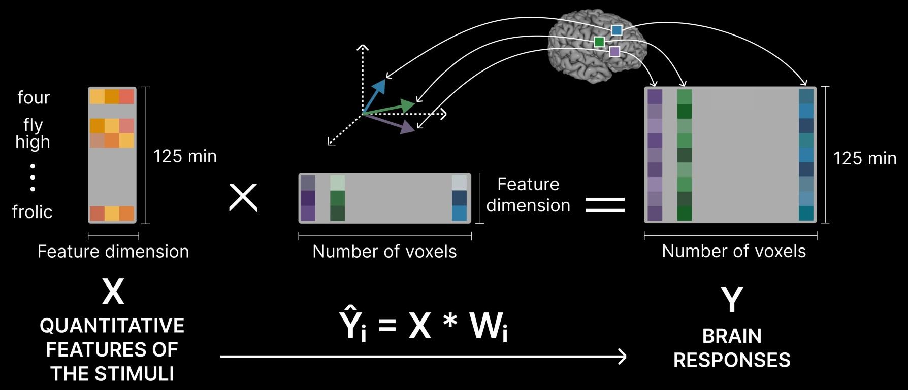
The object of interest is not the prediction but the weights. When the model is trained, every voxel ends up with a weight vector: an arrow pointing through the feature space, telling us which features that voxel cares about. If the features were concepts, that arrow would be a tuning curve, and one could read it as a sentence — responsive to numbers, indifferent to family, suppressed by small talk.
From a story to a matrix
The hardest part of building an encoding model is turning something as rich as a story into numbers. The simplest choice is to one-hot encode the words, giving every word in the stories its own dimension and marking a 1 wherever it appears. That produces an enormous sparse matrix and throws away every relationship between words. Grouping words into hand-labelled categories first captures more meaning and usually predicts better.
A major leap in prediction performance came when researchers began using features from machine learning: word embeddings, or activations from language models. These carry much richer structure and consistently beat hand-labelled features, and in general the larger the network the better the prediction.
{kind=link}
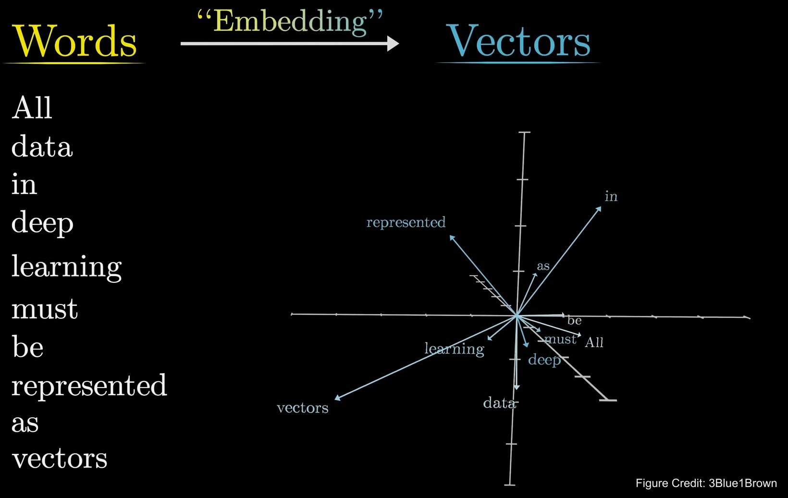
The catch: more concepts than dimensions
Here is the problem with that gain. Features taken from a language model predict brain activity well, but using them to explain the brain means we end up explaining one black box with another.
With hand-labelled features, interpretation was easy, because each dimension was a word or a category by construction. A learned representation has no such guarantee. Neural networks have to represent millions of concepts in a limited number of dimensions, so each concept is encoded as a linear combination of shared directions. In the interpretability literature this is called superposition (Elhage et al., 2022).
{kind=link}
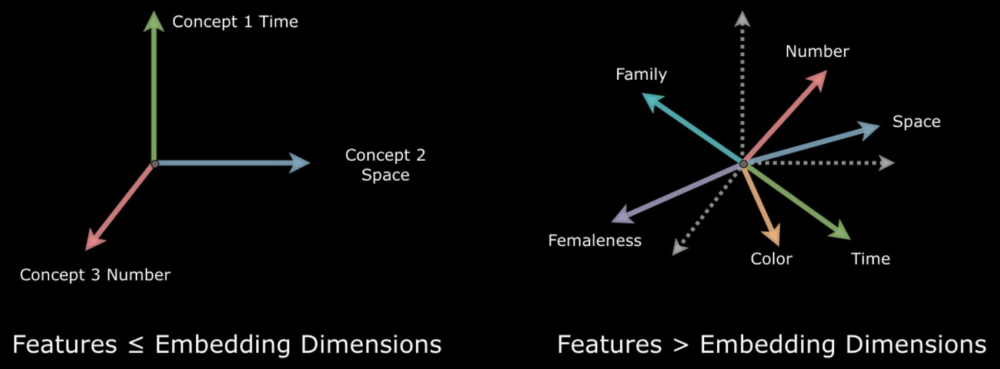
That undoes the readout. In such a feature space, concepts like time and number are correlated, so a weight vector that points toward number will also point toward time. Some concept pairs point in nearly opposite directions, so a negative weight may mean the voxel is suppressed by one, driven by the other, or both.
This is not a theoretical worry. It shows up in the data: here is voxel selectivity from the story-listening experiment, with each voxel labelled by the words it responds to most.
{kind=link}
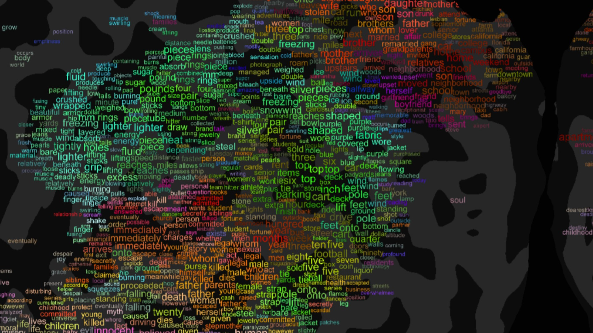
How crowded is the space? Learn 1,000 concept directions from GloVe and measure how nearly parallel they are. In 300 dimensions, 1,000 random directions are almost orthogonal: only 0.03% of pairs have a cosine above 0.2. Among the learned concepts the figure is 2.18% — seventy times the overlap expected by chance.
Take unit concept directions f1 … fk and their Gram matrix G (all the pairwise dot products). If a voxel’s weight vector is w = Σ αi fi, what you can measure is the projections p = Gα. When G is invertible you can recover α; when it is singular, different mixtures α give the same w, and the weights are non-identifiable. Orthogonal concepts mean G = I and the projections are the answer.
Seen as Bayesian regression, ridge on dense features is exactly ridge on the concept features with a correlated Gaussian prior: atoms that point the same way are pushed to share weight. Good for prediction when related concepts really do co-occur; bad for reading the weights.
The fix: give every concept its own axis
Superposition happens when too many features are crammed into too few dimensions, so the way out is to unpack them: recover the hidden semantic directions and give each one a coordinate of its own. That is the left-hand picture at the top of this page, a space whose axes are concepts, where a weight pointing at number means the voxel responds when numbers appear.
The tool is sparse coding, proposed by Olshausen and Field in 1996 as an account of how visual cortex represents natural images, and developed a few doors down from this work: find a dictionary of atoms such that each input is the sum of only a few of them. Word vectors suit it well. Queen is royalty together with femaleness; royalty recurs in king and castle, femaleness in daughter and mother, and most words are composed of a handful of such factors.
Written out, each word vector x is a weighted mix of a small number of concept atoms ϕ. Doing that for every word at once is a matrix factorization: the dense embedding matrix becomes a coefficient matrix times a dictionary of atoms. The factorization expands the feature space into a higher-dimensional one, where different concepts can separate cleanly — 1,000 atoms living in the original 300. This works because of one key assumption, sparsity: most words connect to only a few underlying concepts, so most entries in the new representation are expected to be zero.
{kind=link}
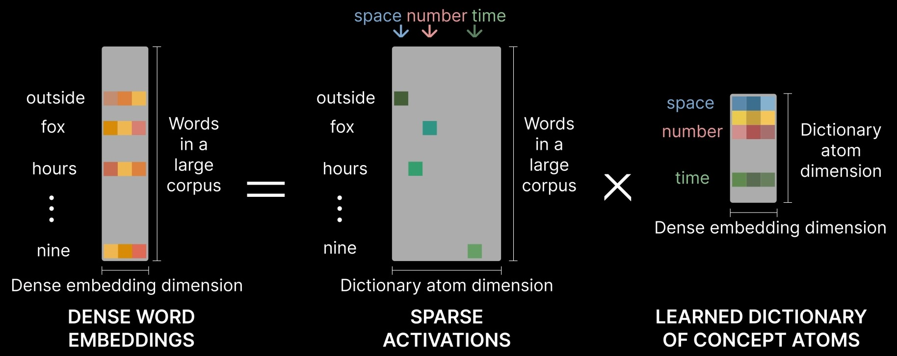
Walking, for instance, comes out as a combination of five:
{kind=link}
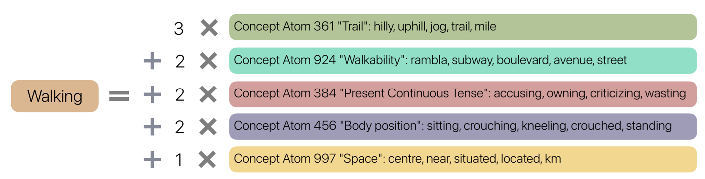
Most atoms are equally legible. A sample, with the words that activate each most strongly:
| Atom | Top words in the stories |
|---|---|
| 505 | eleven, sixteen, nineteen, fifteen, seventeen, twenty, ten, eighteen, thirty, sixty |
| 81 | morning, afternoon, evening, weekends, monday, tuesday, lunch, night, hour, day |
| 997 | near, close, distance, airport, center, miles, opposite, minutes, village, mile |
| 456 | standing, sitting, stood, sat, sit, crouch, aisle, stands, lying, behind |
| 115 | grandparents, sister, dad, cousins, brother, siblings, mom, grandfather, mother, stepmother |
| 369 | although, though, however, despite, but, yet, anyway, surprisingly, somewhat, far |
| 707 | thanks, hello, sorry, hey, bye, hi, dear, thank, yeah, ya |
| 494 | gon, outta, ya, gotta, lotta, em, wanna, gonna, fo, shit |
Sparse coding left neuroscience long ago and is now central to mechanistic interpretability in AI. Anthropic once found a single sparse feature inside Claude that stands for the Golden Gate Bridge. Turned up, it took over the model’s personality: asked how to spend ten dollars, it suggested driving across the bridge and paying the toll; asked for a love story, it wrote about a car crossing its beloved bridge on a foggy San Francisco morning.
The atoms here are the same kind of object, learned from a word embedding rather than from a language model’s activations, and used to read cortex rather than to steer a chatbot.
Then the substitution. Every word is re-encoded as its 1,000-dimensional sparse code, and the same ridge regression is fit on those features in place of the 300 dense ones. Each voxel’s weight vector now lives in a space whose axes are concepts, so what a voxel selects for can be read off directly and mapped across cortex. Because the codes are non-negative, a positive weight means the voxel is driven by that concept and a negative weight that it is suppressed.
{kind=link}
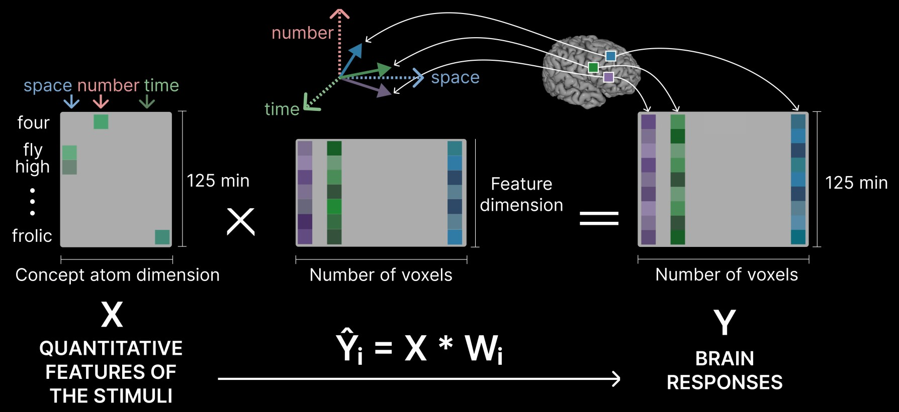
One refinement made the atoms cleaner. Very frequent words lie close to the origin of an embedding, so sparse coding tends to collect unrelated frequent words into a single atom. Before learning the dictionary we reparameterize each vector by its norm, spreading the short vectors apart and drawing the long ones together. This Vector Norm Reparameterization gives more coherent atoms, lower reconstruction error and sparser codes.
What follows
Prediction: unchanged
The first concern is that expanding 300 dimensions to 1,000 sparse ones should cost accuracy. It does not. Across the seven subjects, the mean difference in held-out R2 between the sparse and dense models is 0.00047 ± 0.00071, paired t(6) = −1.77, p = 0.13. Voxel for voxel, the two models lie on the diagonal.
{kind=link}
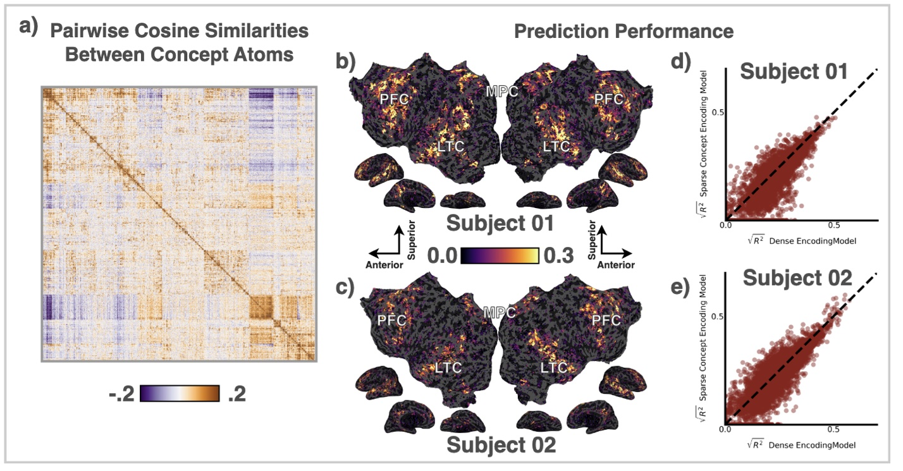
Maps you can read
A concept map is now immediate: take one atom and plot its weight in every voxel. Atom 456 (standing, sitting, crouch) reads as body position and atom 115 (grandparents, sister, dad) as family. Each gives a distributed, bilateral pattern, and the pattern is nearly the same in two different brains.
The dense model has no principled way to produce such a map, only heuristics, and the one used here yields maps that are patchier, less symmetric and less consistent between people. Across the 20 most active atoms and all seven subjects, sparse maps agree between people at cosine 0.26 ± 0.04; dense heuristic maps at 0.09 ± 0.04.
{kind=link}
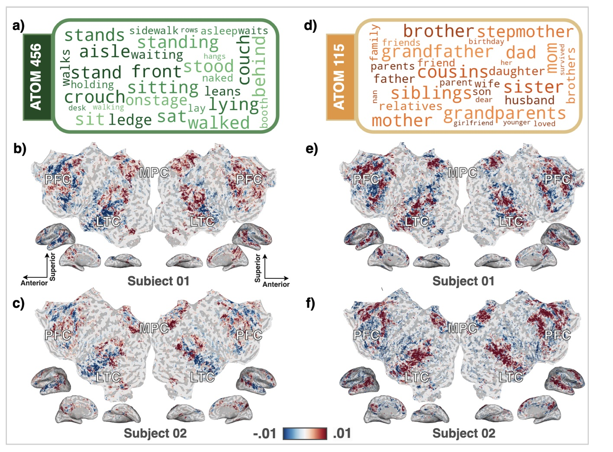
Time, space and number share cortex
Now the question this page opened with can be put directly: where in cortex are time, space and number represented? It is also a test of a long-standing idea in psychology, that the three share a common magnitude system in the brain (Walsh, 2003). Behaviour supports it; imaging has been inconsistent. Concept atoms make the test direct, because the number atom (eleven, sixteen), the time atom (morning, afternoon) and the space atom (near, distance) are independent axes in one space, so their maps can be laid over one another.
Take the top 5,000 voxels for each and colour them red, green and blue. White areas show the three-way overlap, the voxels that respond to all three. They fall in the intraparietal sulcus and the inferior frontal gyrus, bilaterally, in both subjects shown — the regions the shared-magnitude literature has pointed to. Averaged over seven people, each pair of domains overlaps with an intersection over union of about 0.32–0.34, and all three together at 0.18.
{kind=link}
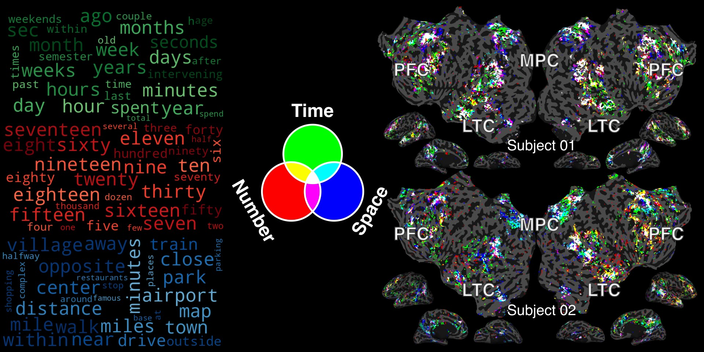
This result has its own page, starting from the theory of magnitude
Concepts have a geometry in cortex
With 20 legible maps one can ask how they relate. Compare every pair, cluster the 20 × 20 similarity matrix in one subject, and the same block structure appears in the next; across all seven, the matrices correlate at 0.70 ± 0.08. Is this the embedding’s structure showing through? It is not: the sparse features themselves are uncorrelated (|r| = 0.00 ± 0.10 across the 190 pairs), while the same directions in GloVe space correlate at 0.16 ± 0.14. The geometry is cortical.
{kind=link}
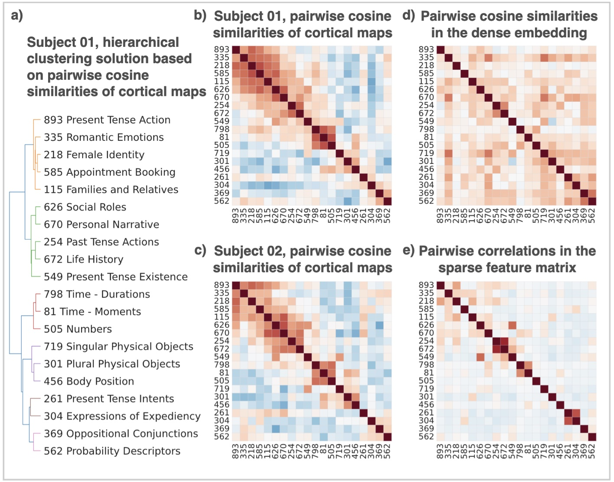
Takeaways
- Weights on dense embedding features are not tuning curves. Superposition makes them non-identifiable, so a positive projection onto a concept establishes nothing.
- Sparse coding is a factorial design for data one could not design. When the stimulus is a story rather than a controlled experiment, it decorrelates the features of interest after the fact.
- It costs nothing in prediction, and it turns a black-box encoding model into a set of concept maps that can be compared.
By unpacking these dense representations we are beginning to see how abstract ideas like time, space and number are organized across the cortex.
The limits should be stated. The word vectors are static and context-free, and contextual features from language models are the natural next step; 1,000 atoms was a choice rather than a result; and atoms inherit whatever biases the embedding carries. Better semantic decoding is also a double-edged instrument, and the questions it raises about mental privacy are real.
Abstract
Encoding models using word embeddings or artificial neural network (ANN) features reliably predict brain responses to naturalistic stimuli, yet interpreting these models remains challenging. A central limitation is superposition: distinct semantic features become entangled along correlated directions in dense embeddings when latent features outnumber embedding dimensions. This entanglement renders regression weights non-identifiable—different combinations of semantic directions can produce identical predictions, precluding principled interpretation of voxel selectivity. To address this, we introduce the Sparse Concept Encoding Model, which transforms dense embeddings into a higher-dimensional, sparse, non-negative space of learned concept atoms. This transformation yields an axis-aligned semantic basis where each dimension corresponds to an interpretable concept, enabling direct readout of conceptual selectivity from voxel weights. When applied to fMRI data collected during story listening, our model matches the prediction performance of conventional dense models while substantially enhancing interpretability. It enables novel neuroscientific analyses such as disentangling overlapping cortical representations of time, space, and number, and revealing structured similarity among distributed conceptual maps. This framework offers a scalable and interpretable bridge between ANN-derived features and human conceptual representations in the brain.
Poster
The whole story on one sheet, as presented at NeurIPS 2025. The talk is on SlidesLive; the paper is on OpenReview.
{kind=link}
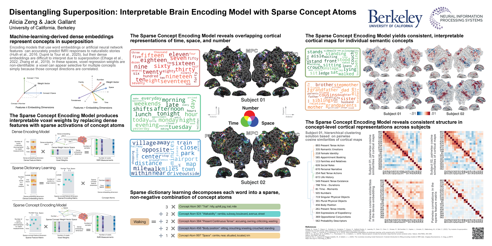
BibTeX
@inproceedings{zeng2025disentangling,
title = {Disentangling Superpositions: Interpretable Brain Encoding Model
with Sparse Concept Atoms},
author = {Zeng, Alicia and Gallant, Jack},
booktitle = {Advances in Neural Information Processing Systems},
year = {2025},
url = {https://openreview.net/forum?id=3aNvX9TQTo}
}